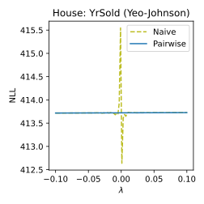

Power Transform Revisited:
Numerically Stable, and Federated
Xuefeng Xu and Graham Cormode
University of Warwick
In Submission
TL;DR: Numerically stable power transforms with an extension to federated learning.
Introduction
Power transforms are widely used parametric methods in statistics and machine learning to make data more Gaussian-like. However, standard implementations suffer from numerical instabilities that can cause incorrect parameter estimates or even runtime failures.
We provide a systematic analysis of these issues and propose effective remedies. We further extend our approach to the federated learning setting, tackling both numerical stability and distributed computation. Finally, we validate our methods on real-world datasets.
Challenge 1: Catastrophic Cancellation
Two common transforms are Box–Cox and Yeo–Johnson. For Box–Cox, with parameter \lambda, the transform is:
\psi(\lambda, x) = \begin{cases} \frac{x^\lambda-1}{\lambda} & \text{if } \lambda\neq0,\\ \ln x & \text{if } \lambda=0. \end{cases} \tag{1}
Given data X = \{x_1,\dots,x_n\}, the optimal \lambda^* minimizes the negative log-likelihood (NLL):
\text{NLL} = (1-\lambda) \sum_{i=1}^n \ln x_i + \frac{n}{2} \ln \text{Var}[\psi(\lambda, x)]. \tag{2}
The variance term is especially prone to cancellation. Consider three mathematically equivalent forms:
- Keep the constant term: \ln \text{Var}[\psi(\lambda, x)] = \ln \text{Var}[(x^\lambda - 1) / \lambda] \tag{3}
- Remove the constant term: \ln \text{Var}[\psi(\lambda, x)] = \ln \text{Var}(x^\lambda / \lambda) \tag{4}
- Factor out \lambda: \ln \text{Var}[\psi(\lambda, x)] = \ln \text{Var}(x^\lambda) - 2\ln |\lambda| \tag{5}
As shown in Figure 1, different forms yield very different numerical behavior. Removing the constant term and factoring out \lambda produces smooth NLL curves, while the other forms lead to spikes and discontinuities.
Takeaway 1: Equivalent formulas can behave differently, careful analysis is essential.
Challenge 2: Numerical Overflow
Variance terms are also prone to overflow. We construct adversarial datasets that trigger overflow across floating-point precisions for Box-Cox:
| Overflow | Adversarial data | \lambda^* | Extreme value | Max Value (Precision) |
|---|---|---|---|---|
| Negative | [0.1, 0.1, 0.1, 0.101] | -361.15 | -3.87e+358 | 1.80e+308 (Double) |
| Positive | [10, 10, 10, 9.9] | 357.55 | 9.96e+354 | |
| Negative | [0.1, 0.1, 0.1, 0.10001] | -35936.9 | -2.30e+35932 | 1.19e+4932 (Quadruple) |
| Positive | [10, 10, 10, 9.999] | 35933.3 | 5.85e+35928 | |
| Negative | [0.1, 0.1, 0.1, 0.100001] | -359353.0 | -2.74e+359347 | 1.61e+78913 (Octuple) |
| Positive | [10, 10, 10, 9.9999] | 359349.0 | 6.99e+359343 |
Such issues also appear in real-world dataset. Figure 2 shows the histograms of skewed and large-value features in the Ecoli and House datasets.
To avoid overflow, we use log-domain computation for the variance. Figure 3 compares NLL curves: linear-domain breaks down, while log-domain remains continuous and stable.
Takeaway 2: Use log-domain computation when handling extreme values.
Challenge 3: Federated Aggregation
In federated learning, we want to estimate a global \lambda^* across distributed clients. This requires stable computation of global NLL under communication constraints.
A naive one-pass method has clients send (n, \sum x, \sum x^2), and the server computes:
\frac{1}{n} \sum_{i=1}^n x_i^2 - \frac{1}{n^2} \left(\sum_{i=1}^n x_i\right)^2 \tag{6}
The Equation 6 is unstable. Instead, we adopt the pairwise algorithm: clients send (n, \bar{x}, s) with mean \bar{x} and sum of squared deviations s=\sum(x-\bar{x})^2. The server merges them in a tree structure (Figure 4):

The merging formulas are:
n^{(AB)} = n^{(A)} + n^{(B)}, \tag{7} \bar{x}^{(AB)} = \bar{x}^{(A)} + (\bar{x}^{(B)} - \bar{x}^{(A)}) \cdot \frac{n^{(B)}}{n^{(AB)}}, \tag{8} s^{(AB)} = s^{(A)} + s^{(B)} +(\bar{x}^{(B)} - \bar{x}^{(A)})^2 \cdot \frac{n^{(A)}n^{(B)}}{n^{(AB)}}. \tag{9}
Figure 5 shows that naive formulas produce spiky curves, while pairwise aggregation yields smooth ones.

Takeaway 3: Avoid textbook one-pass variance formula in numerical computing.
Open Source Contributions
Our methods have been integrated into SciPy and Scikit-learn:
Citation
@misc{Xu2025powertf,
title={Power Transform Revisited: Numerically Stable, and Federated},
author={Xuefeng Xu and Graham Cormode},
year={2025},
eprint={2510.04995},
archivePrefix={arXiv},
primaryClass={cs.LG},
url={https://arxiv.org/abs/2510.04995},
}